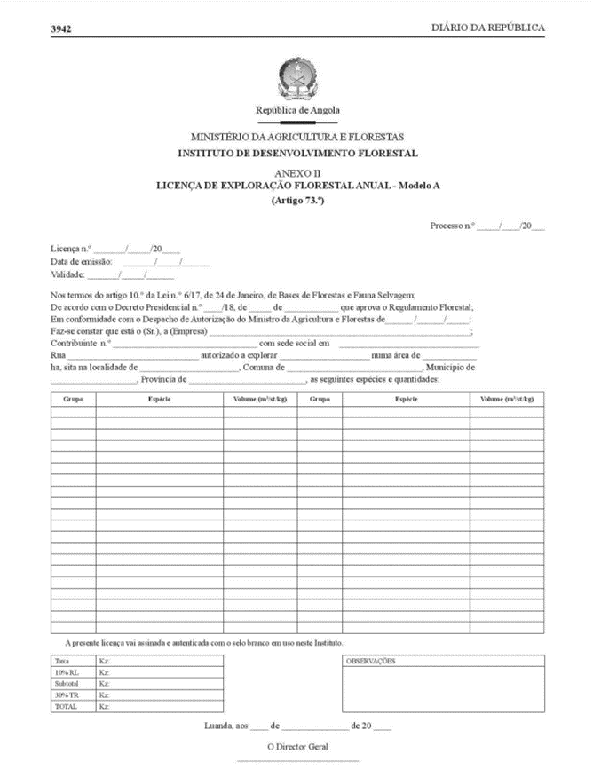

Implementing Timber Leglity Assurance Systems
A guide to comply with timber legality requirements in Cameroon and to support due diligence

ANGOLA
Angola’s Timber legality requirements
Angola has not yet entered into negotiations for a Voluntary Partnership Agreement with the European Union. However, the country has a relatively comprehensive legal system that ensures identification and mitigation of risks for wood products in compliance with national laws and helping prevent the import of illegal timber into other countries. By being aware of the legal requirements in Angola highlighted below, law enforcement agencies and importers can implement control and risk mitigation measures to prevent timber being illegally harvested, transported and traded. Importers and verification agencies may refer to or use this definition in implementing due diligence.
Suggestions for developing and implementing due diligence for importers
Due diligence and complexity

Developing due diligence systems
Implementing due diligence
The following documents are selected in accordance with Angola’s legal definition and/or legal requirements in different stages of the supply chain.
Annual forest exploitation license (Licenca de Exploração florestal)
Provide verifier from the holder of the right to harvest specific timber species with a certain allowable volume from a defined forest area. Cross-check information with the Certificate of Origin and the Transit Permit. Carefully check the name of the License holder and the province specified, and ensure the License has been signed and stamped by the Director General of the Forestry Development Institute (Instituto de Desenvolvimento Florestal - IDF).
Environmental impact assessment report
The environmental impact assessment report has been approved by the Ministry of Environment and the Ministry of Agriculture and Forestry. Check project owner's name, signature and stamp, date is valid and planned mitigation action.
Forest management plan
For holder of concession contract, a detailed forest management plan is approved by the IDF. Check signature, seal of IDF’s representative.
Map of concession area
For annual forest exploitation license, a map of the concession area of 1/100,000 is prepared by the local agency of the Institute of Geodesy and Cartography of Angola (Instituto Geodesía e Cartografia de Angola - IGCA). Check the concession owner's name, address, location and concession area.
Harvesting plan
Cross-check species harvested, methods of harvesting, types of products or equivalent products in the harvesting.
Map of concession area
For annual forest exploitation license: a map of the concession area of 1/100,000 is prepared by the local agency of the Institute of Geodesy and Cartography of Angola (Instituto Geodesía e Cartografia de Angola - IGCA).
Certificate of Origin
Cross-check with information on the Forest Exploitation License and Transit Permit, carefully check the province of origin and the volume and species of trees, and ensure the Certificate of Origin has been signed by the Provincial Head of the IDF as well as check point or warehouse personnel.
Transit Permit
Cross-check with information on the Certificate of Origin and Forest Exploitation License, check the tree species and volumes specified, and ensure the date is valid and the Permit has been signed by warehouse personnel and signed and stamped by the Provincial Head of the IDF.
Export License (Documento Único Provisório)
Cross-check with other supply chain documents and ensure the License has been signed by the Director of External Trade, Ministry of Industry and Trade (Ministério da Indústria e Comércio). Cross-check information on product volume, description, means of transport, type and value of goods of exporters and importers on export License with other documents.
CITES Permit
CITES permits are issued by the National CITES Management Authority of the Ministry of Environment. Check the signature and seal of the CITES Management Authority, the name of the applicant / applicant's signature for the export permit, the name of the port of export.
Environmental Operating License (Licença Ambiental de Operação)
The environmental operating license is signed by the Minister of Environment or an authorized person and stamped by the Ministry of Environment. Check the document, signature and seal, validity of date, place of issue of the license.
Commercial license
The commercial license is signed and stamped by the Director General of the General Department of Internal Trade, Ministry of Industry and Trade. Check the document, signature and seal, validity of date, place of issue of the license.
Occupational Health and Safety Services Reports
Importers can request monthly, quarterly and annual reports for companies with 50 or more employees.
The social security award letter
The social security award letter is published by the Ministry of Public Administration, Employment and Social Security (Ministério da Aministração Pública, Emprego y Segurança Social - MAPESS). Check the number of workers with income compared to social security contributions, verify on-site payment records in accordance with the award letter.
Labor contract
Labor contract is applicable to certain types of work. Verify on-site the employee has a suitable labor contract in the sector.
The award letter social security
The award letter social security is published by the MAPESS.
Occupational Health and Safety Services Reports
Importers can request Occupational Health and Safety Services Reports for companies with 50 or more employees.